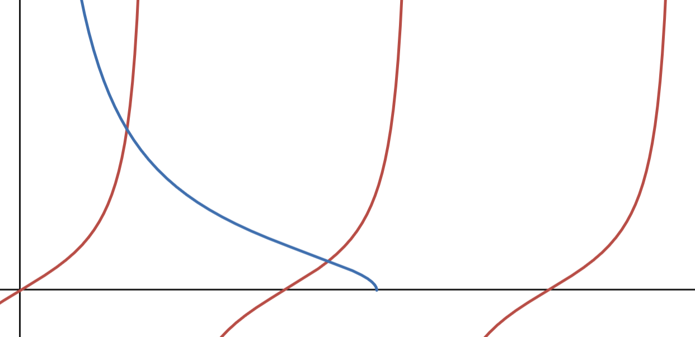
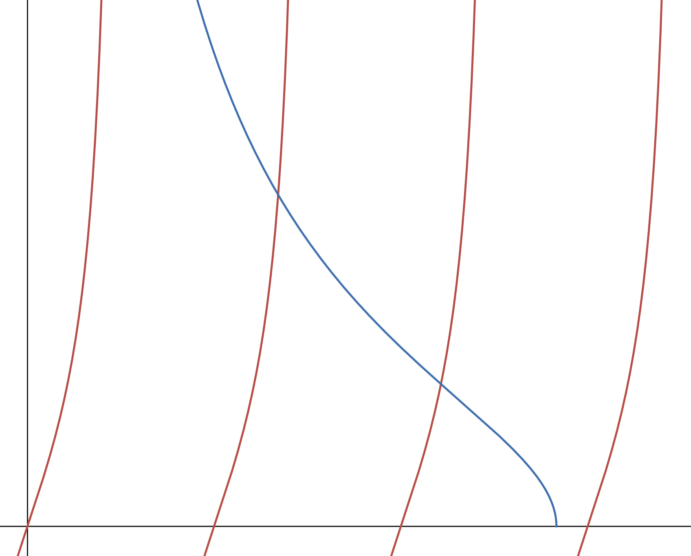

The Finite Potential Well
Say that we have a particle moving in one dimension with the following potential: \[V(x)= \begin{cases} V_0 & |x| \gt \frac{a}{2} \\ 0 & |x| \lt \frac{a}{2} \end{cases}\]- No eigenvalue in the spectrum of \(\hat H\) can be less than the minimum potential, in this case 0. \(E\lt\min_{x\in\mathbb{R}} V(x) \implies E\notin \sigma(\hat H)\).
-
For \(0 \lt E \lt V_0\), \(\mu (V^{-1}(\epsilon \lt E)) = a \lt \infty\) where \(V^{-1}(\epsilon \lt E) = \{x \mid V(x)\lt E\}\).
In other words, there is a set of possible \(x\) values with finite width \(a\) where the energy \(E\) is between 0 and \(V_0\).
Because the potential in this area is 0, this is a "classically accessible region", where the potential is less than the total energy, \(E\). (To be classically accessible, the total energy \(E\) must be greater than the potential energy, so the kinetic energy is positive).
However, since this isn't just classical mechanics, we can also access the areas outside of the interval between \(-\frac{a}{2}\) and \(+\frac{a}{2}\). The potential here is suddenly different, so for wavefunctions with a corresponding energy \(E\) so \(0 \lt E \lt V_0\), we need to enforce continuity over each boundary. Not all possible wavefunctions are continuous in this way, so we cannot have arbitrary wave functions in this region, so the associated eigenvalues \(E\) are also not continuous; the spectrum is discrete. - For \(E \gt V_0\), \(\mu (V^{-1}(\epsilon \lt E)) = \infty\). In other words, the possible \(x\) values (also called anti-images) are the set of all real values. Thus, this entire area is classically accessible (the total energy is greater than the largest possible potential, \(V_0\)). Since no constraints exist here like with the \(0 \lt E \lt V_0\) case, this part of the spectrum is continuous. Additionally, for each single energy \(E\), we have two wave functions, one that travels to the left (towards \(x=-\infty\)) and one that travels to the right (towards \(x=\infty\)). So all of these eigenvalues are double degenerate.
I. In this section, the potential is \(V_0\), so: \[\begin{align} E\psi_I(x) &= \frac{\hbar^2}{2m}\psi_I^"(x) + V_0\psi_I(x) \\ \psi^"_I(x) &= \frac{2m(V_0-E)}{\hbar^2} \psi_I(x) \end{align}\] call \(\beta = \sqrt{\frac{2m(V_0-E)}{\hbar^2}}\), so that we have \(\psi^"_I(x) = \beta^2 \psi_I(x)\), which has the solution: \[\psi_I = A_1 e^{\beta x} + A_2 e^{-\beta x}\] Since we're considering \(0 \lt E\lt V_0\), \(V_0-E\) will always be positive, and so \(\beta\) is always positive. Because we're in region \(I\), however, \(x\) is always negative, so the exponent \(\beta x\) is negative, and \(-\beta x\) is positive. \(A_2e^{-\beta x}\) then blows up as \(x\) goes to \(-\infty\) (we constrained \(I\) so that x can't go to \(+\infty\), so \(A_2e^{\beta x}\) doesn't blow up). We don't want the integral of our wavefunction to diverge, hence we set \(A_2=0\).
II. In this section, potential is 0, so \[ \psi_{II}^" = -\frac{2mE}{\hbar^2}\psi_{II} \] which has solution \(\psi_{II} = B_1e^{ikx} + B_2e^{-ikx}\) for \(k = \sqrt{\frac{2mE}{\hbar^2}}\).
III. In this section, the potential is again \(V_0\), so: \[\psi^"_{III} = \beta^2\psi_{III} \to \psi_{III} = C_1e^{\beta x} + C_2e^{-\beta x}\] In this case, \(x\) is positive, so \(C_1e^{\beta x}\) blows up and so we set \(C_1=0\). We now have: \(\psi_{III} = C_2e^{-\beta x}\), \(\psi_{II} = B_1e^{ikx} + B_2e^{-ikx}\), and \(\psi_I = A_1 e^{\beta x}\). We can find \(A_1, C_2, B_1, B_2\) by enforcing our boundary condition of continuity. \[\psi^"(x) = \frac{2m(V(x)-E)}{\hbar^2}\psi(x)\] and we want: \[\begin{align} &\begin{cases} \psi_I(-\frac{a}{2}) = \psi_{II}(-\frac{a}{2}) \\ \psi_I^{'}(-\frac{a}{2}) = \psi_{II}^{'}(-\frac{a}{2}) \end{cases} \\ &\begin{cases} \psi_{II}(\frac{a}{2}) = \psi_{III}(\frac{a}{2}) \\ \psi_{II}^{'}(\frac{a}{2}) = \psi_{III}^{'}(\frac{a}{2}) \end{cases} \end{align}\] in order to determine the relative magnitudes of each coefficient and also to produce our discrete portion of the spectrum of \(\hat H\). There's a long, tedious, more rigorous derivation for this, but we can a little more quickly get our result by exploiting the symmetry via a reflection over \(x=0\). We use the parity operator here: \[\hat \Pi|x\rangle = |-x\rangle, [\hat H, \hat \Pi] = 0\] \[\begin{align} \hat H(\hat \Pi|\psi\rangle) &= \hat H|-\psi\rangle = -\hat H|\psi\rangle = -E|\psi\rangle = E|-\psi\rangle \\ &= E\hat \Pi|\psi\rangle \end{align}\] Since they commute, we can find a common basis of eigenvectors, and when the parity operator acts on an energy eigenfunction \(|\psi\rangle\). Just like we did previously, we can define a \(|\psi_\pm\rangle = |\psi\rangle \pm \hat\Pi|\psi\rangle\). These create a set of eigenfunctions that are either even or odd:
\(|\psi_+\rangle = |\psi\rangle + |-\psi\rangle\) yields even eigenfunctions, since \(\langle x|\psi_+\rangle = \langle x|\psi\rangle + \langle x|-\psi\rangle\) and \(\langle -x|\psi_+\rangle = \langle -x|\psi\rangle + \langle -x|-\psi\rangle = \langle x|-\psi\rangle + \langle x|\psi\rangle = \langle x|\psi_+\rangle\). \(|\psi_-\rangle = |\psi\rangle - |-\psi\rangle\) yields odd eigenfunctions, since \(\langle x|\psi_-\rangle = \langle x|\psi\rangle - \langle x|-\psi\rangle\) and \(\langle -x|\psi_-\rangle = \langle -x|\psi\rangle - \langle -x|-\psi\rangle = -\langle x|\psi\rangle + \langle x|-\psi\rangle = -\langle x|\psi_-\rangle\). Every odd function has a corresponding even function that produces the same probabiliry distribution (since the probability requires we take the modulus squared), so we can choose to consider only the even functions (or only the odd functions, but the math comes out easier for even functions). When even, we have: \[\psi(x) = \psi(-x) \implies \psi_{I}(x) = \psi_{III}(-x) \text{ and } \psi_{II}(-x) = \psi_{II}(x)\] Meaning that \(A_1 = C_2 = C\), and: \[ B_1e^{-ikx} + B_2e^{ikx} = B_1e^{ikx} + B_2e^{-ikx} \implies B_1=B_2, \forall |x|\lt\frac{a}{2} \] (if we had gone with the odd case, \(B_1=-B_2\) instead). As a result, \(\psi_{II} = B(e^{-ikx}+e^{ikx}) = 2B\cos(kx)\) and \(\psi_{III}(x) = Ce^{-\beta x}\). We can enforce the boundary condition between \(II\) and \(III\): \[\begin{align} 2B\cos(k\frac{a}{2}) &= Ce^{-\beta\frac{a}{2}} \tag{1} \\ -2B\sin(k\frac{a}{2}) &= -\beta Ce^{-\beta\frac{a}{2}} \tag{2} \end{align}\] Dividing (2) by (1) yields \(k\tan(k\frac{a}{2})=\beta\), and we know that \(\beta = \sqrt{\frac{2m(V_0-E)}{\hbar^2}}\), so: \[k\tan(k\frac{a}{2})=\sqrt{\frac{2m(V_0-E)}{\hbar^2}} = \sqrt{\frac{2mV_0}{\hbar^2} - \frac{2mE}{\hbar^2}} = \sqrt{\frac{2mV_0}{\hbar^2} - k^2}\] \[\tan(k\frac{a}{2})=\sqrt{\frac{2mV_0}{(\hbar k)^2} - 1}\] Because we're considering \(0 \lt E \lt V_0\) so \(\frac{2mv_0}{(\hbar k)^2} = \frac{2mV_0\hbar^2}{\hbar^22mE} = \frac{V_0}{E} > 1\), so \(\sqrt{\frac{2mV_0}{(\hbar k)^2} - 1}\) will always be real. We can't solve this analytically, since this is a transcendental function, but graphically (where the \(x\) axis varies with \(k\)) we can see that the function on the LHS and RHS must intersect, so there is at least one bound state:

Fig 1. An approximate plot of \(\tan(k\frac{a}{2})\) and \(\sqrt{\frac{2mV_0}{(\hbar k)^2} - 1}\).
The blue line is our (approximate) plot of \(\sqrt{\frac{2mV_0}{(\hbar k)^2} - 1}\); since this can never be negative, it ends abruptly upon intersecting with the \(k\) axis. The value of \(k\) that produces this endpoint is the maximum value of \(k\), \(k_{max} = \sqrt{\frac{2mV_0}{\hbar^2}}\).
The red line is our (approximate) plot of \(\tan(k\frac{a}{2})\). Since \(\tan(x)\) has vertical asymptotes of \(\frac{\pi}{2}, \frac{3\pi}{2}\), etc., \(\tan(k\frac{a}{2})\) has vertical asymptotes of \(\frac{\pi}{a}, \frac{\pi}{a} + \frac{2\pi}{a}\), etc.
Evidently, since \(\tan(k\frac{a}{2})\) intersects the origin and goes to infinity, and \(\sqrt{\frac{2mV_0}{(\hbar k)^2} - 1}\to\infty\) as \(k\to 0\), they must intersect at least once. This means we are guaranteed to have one bound state.

Fig 2. An approximate plot of \(\tan(k\frac{a}{2})\) and \(\sqrt{\frac{2mV_0}{(\hbar k)^2} - 1}\) with an increased \(a\) and an increased \(V_0\).
A higher \(a\) will make the tangent function more "dense", and a higher \(V_0\) will make \(k_{max}\) larger, which will cause the two functions to intersect at even more points. Thus, increasing the width, \(a\) of our potential well, or increasing its height, \(V_0\) means that we have more bound states.